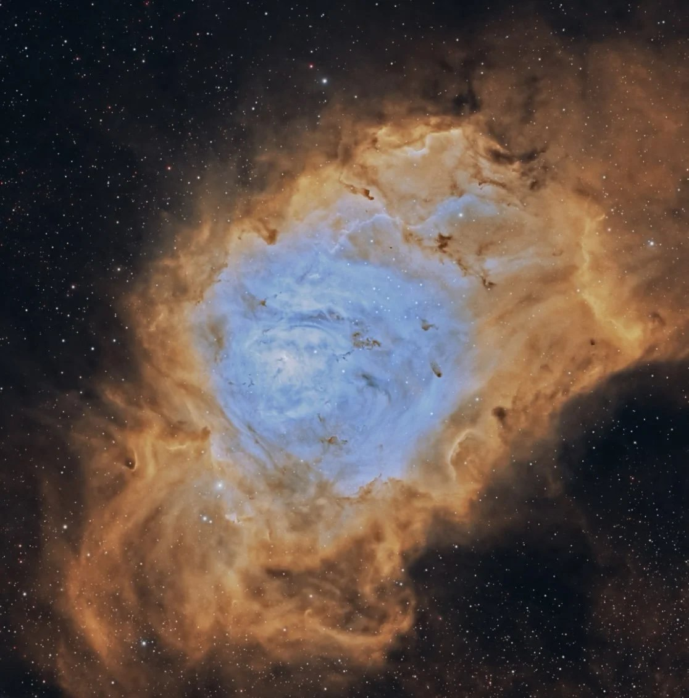
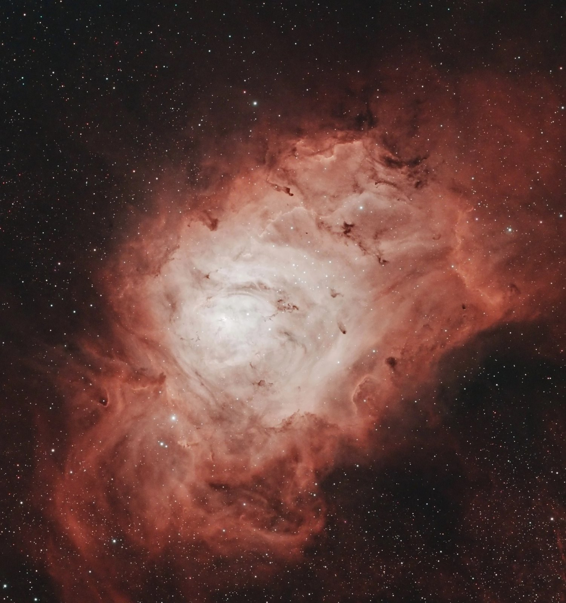

The Lagoon Nebula
M8Emission nebulaSagittarius~5,200 light-years
My first-ever attempt at deep-sky astrophotography. The first image is processed in the Hubble palette, where the narrowband channels are mapped to red, green, and blue. The second is closer to the nebula's natural color, reddish because it is made mostly of hydrogen.
I couldn't describe the excitement I felt when it first appeared on my screen. Getting there meant lugging over 25 kg of equipment, being out in the middle of nowhere (constantly alert for wildlife), and staying up all night, and all of it was part of the magic.